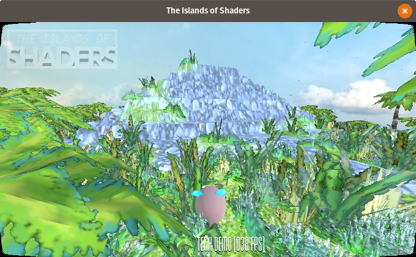
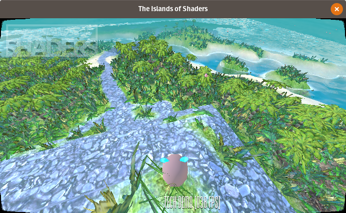
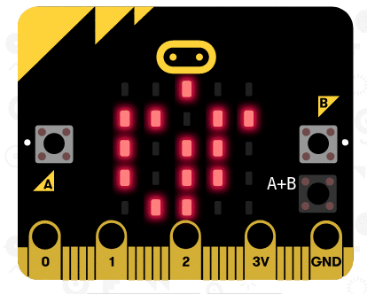
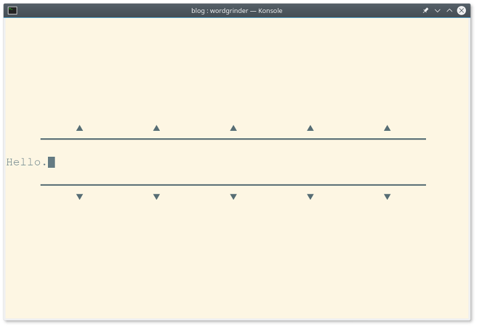
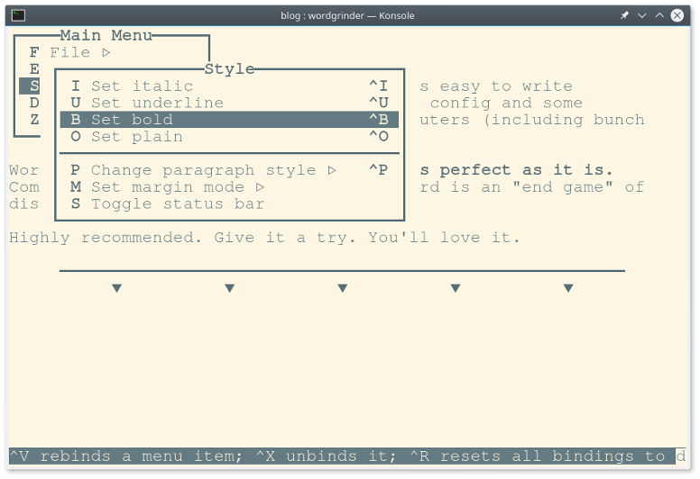

Resurecting an EEE PC Netbook with Debian
I bought an classic ASUS EEE PC 701SD.

I tested a few distributions and desktop environments but with no luck. Mostly because this computer have only 1GB ram and old Celeron 900Mhz. On that kind of machine everything runs slow. By default. But this is a GNU/LINUX. It works on everything. So I changed my approach to this problem. Instead of searching for faster distro I first decide what I need in terms of software.
My ultimate goal is to have small Linux computer with good keyboard (mechanical) for remote writing. Closes to this dream is freeway writer. But it's expensive and very, very limited. EEE PC + external keyboard seems close enough.
Thinking from this perspective I could run just any Linux with decent word-processor. And the best word-processor I know and love is wordgrinder. A terminal application. Then why I even need a desktop in the first place? It turns out that was the answer to most of my problems (with low spec computers).
I put Debian 9.5 minimal install on the EEE PC. Terminal only. And then, using apt install only the necessary applications. What did I choose?
Essentials:
- wicd, wicd-daemon wicd-curses; for connecting to WiFi
- mc; for file/dir management
- htop; process monitor
- git
- wordgrinder; to write this post
- ltp; power management for laptops
- woof; for simple file sharing over the local network
- acpi; for battery info
- links; for web browsing, duckduckgo/wikipedia
Additional:
- ncdu; Disk Usage utility, useful for small storages
- neofetch; for cool info about the system
- figlet; for generating huge text banners, useful for scripts
- ansiweather; for easy weather forecast
- vrms; just to be sure the RMS is proud of me ;)

This setup cost me less than 1GB of storage. I made some scripts to mimic desktop environment. Instead of icons for most used apps I have aliases. For windows I have [alt]+[arrows] that works like [alt]+[tab]. And each app/terminal is in full-screen non-distraction mode by default :)
For wikipedia and some basic duckduckgo stuff Links is enough I need.
And beside the OS, the hardware itself is small, quiet and just cute.
Tags: linux
Water Shader in GodotEngine 3

Introduction
I've started my journey through the wonderful world of shaders around month ago. It's still all new to me and I'm learning. But over the days I manage to put few things together and make an awesome water shader that you all asking about. Thats why I decided to make and in-depth analysis of this one shader.
Lets start with some background. I generates terrain using height map.

It is a special texture that keeps information about height of each vertex of the terrain. White pixel is the maximum height. Black is the base of terrain. Take a look a the pyramid and river shapes.


Now the fun part. The shader.

Here are the whole shader you can look at. I start with a bunch of variables. To easily tune-up the final look and make different styles.
shader_type spatial;
uniform vec2 amplitude = vec2(1.0, 1.0);
uniform vec2 frequency = vec2(.2, .2);
uniform vec2 time_factor = vec2(2.0, 2.0);
uniform vec3 water_color = vec3(0.25, 0.27, 0.15);
uniform float water_height = 2.5;
uniform float water_clearnes = 0.4;
uniform float water_refraction = 0.014;
uniform float water_alpha = 0.7;
uniform float water_shore = 0.36;
uniform float water_color_contrast = 6.0;
We need height map sprite to known where is the land. And to find shore line.
uniform sampler2D height_map;
Here comes the first function. Height.
float height(vec2 pos, float time, float noise){
return (amplitude.x * sin(pos.x * frequency.x * noise + time * time_factor.x)) + (amplitude.y * sin(pos.y * frequency.y * noise + time * time_factor.y));
}
It takes position and time + noise. Then it calculates height using sin and random value for natural look. To make the water "move", time variable is added to the calculations.
How to get noise?
float fake_random(vec2 p){
return fract(sin(dot(p.xy, vec2(12.9898,78.233))) * 43758.5453);
}
vec2 faker(vec2 p){
return vec2(fake_random(p), fake_random(p*124.32));
}
I was using texture with random noise but then I found this awesome function. One generates random float and the second vec2.
Vertex Shader
Now combine all of this. For each vertex of the water plain I change the height.
Thats how it looks with just a water height (flat).
VERTEX.y = water_height

And now with noise.
float noise = faker(VERTEX.xz).x;
VERTEX.y = water_height + height(VERTEX.xz, TIME, noise);

Water height is added for complex levels where some water will have different height (think waterfall).
Then there is this code. To be honest I don't really understand it but it's for generating normals. We will need this for refraction.
TANGENT = normalize( vec3(0.0, height(VERTEX.xz + vec2(0.0, 0.2), TIME, noise) - height(VERTEX.xz + vec2(0.0, -0.2), TIME, noise), 0.4));
BINORMAL = normalize( vec3(0.4, height(VERTEX.xz + vec2(0.2, 0.0), TIME, noise) - height(VERTEX.xz + vec2(-0.2, 0.0), TIME, noise), 0.0));
NORMAL = cross(TANGENT, BINORMAL);
Now that the water moves we can add a little bit of color to it.
Fragment Shader
Here's where the magic happens.
vec2 uv2 = UV * -1.0;
float height = texture(height_map, uv2.xy).r;
The way I make the terrain and particles my heightmap needs to be mirrored. Then I read height value from heightmap texture.
Using height I can calculate smooth gradient from the shore to the deepest places.
float gfx = smoothstep(0.15, water_shore, height);
vec3 w_color = vec3(gfx, gfx, gfx) * water_color_contrast;
New color is brighter when closer to the shore. To make it visible like in my example I added high contrast value.
Then comes all the parameters of the material.
ALBEDO = w_color;
ROUGHNESS = gfx;
METALLIC = 0.8;
SPECULAR = gfx;
ALPHA = 1.0 - clamp(gfx, water_alpha, 1.0);

And last we have refraction effect. I copied the code form the YouTube tutorial where the guy says he's copied it form yet another one. So it's a shared snippet.
vec3 ref_normal = normalize( mix(VERTEX,TANGENT * NORMALMAP.x + BINORMAL * NORMALMAP.y + VERTEX * NORMALMAP.z, NORMALMAP_DEPTH) );
vec2 ref_ofs = SCREEN_UV + ref_normal.xy * water_refraction;
EMISSION += textureLod(SCREEN_TEXTURE, ref_ofs, ROUGHNESS * water_clearnes).rgb * (1.0 - ALPHA);
ALBEDO *= ALPHA;
ALPHA = 1.0;

It takes all the light that comes and calculates refracted position. Then resets alpha as water is already fully rendered and needs to overlap real ground. The good part of it is that it just works :)
That's the final result:


I hope I could help and inspire you to make your own water shader.
Stuff
All the sources are available at the GitHub. Also the whole tech demo project.
I was using code from those sources:
- Godot Game Engine - Basic Water (Spatial-) Material by DerDieDasMedia
- Godot 3D shader tutorial : Water in 3D by Bastiaan Olij
Leave your comments and suggestions at /r/godot/ post. Thanks!
Tags: graphics, shaders, gamedev, godot-engine
Game of Life for BBC Micro:bit
This incredible little machine is both cute and intresting. What you can do with 16Mhz, 16KB RAM and a screen capable of 5x5 resolution?


You can make Game of Life!
I don't have the real unit yet so I'm using web emulator. But to make it more challanging and fun I'm using only Microsoft Block Editor to program micro:bit controller.

My first attemt was to use two-dimmensional arrays. But blocks don't support this well. Also it takes more ram. The solution was to use more calculations on a flat array. The screen resolution is 5x5 that gives us 25 cells. Then I created second array for sorrounding cells positions. This simplifies the code. Less code equals to less blocks in the editor. Final code turns out very nice. Both as algorithm and visual structure. And blinking LED are always cool.
{kind=link}
Radio
Another cool thing about micro:bit and it's software is radio module. It is the simplies way to communicate between multiple devices I have ever seen and used. It's super fun. I tested it implementing sharing feature for this Game of Life. Each moment you can pause and share world state with another micro:bits.
Not Only For Kids
BBC Micro:bit is designed for kids. But is as usefull for adults as well. I woudl never made this kind of solution for Game of Life before using e.g. Python. This turns out as a nice, refreshing exercise/experiment. And as a bonus when I finally buy real device I will have a nice code to run.
Play
- [Shake] to generate new random state.
- [A] send state to other devices via radio
- [B] start/stop simulation
- [A]+[B] print generation number
Tags: microbit, code, Microsoft-Block-Editor
Word Grinder

Once in a while I found some new software that's so perfect for my needs as if I write it myself. One of those is a Word Grinder. It's a terminal word processor for processing words (quote from the homepage). Nothing less, nothing more. Perfect.
Why?

Most important thing while writing longer text is to avoid any distractions. Word Grinder puts you right into the document and hides everything else. No menus, no toolbars. There is a status bar at the bottom by default but it can be easly hidden (toggle view). Afther that it looks and behave like any modern "distraction free" editor. So the real question is why do you need those when there is already Word Grinder.
It works on any Linux powered computer. It's super fast and lightweight. All you need is a terminal. Raspberry Pi Zero can do that. And on Debian it's already installed.

It is a word processor not a text editor. For those that don't know the difference: one can make text bolder, underline, set heading, bullet lists, etc and the other not. It can import/export Open Document Format files. So it's compatible with LibreOffice Writer. It can export as HTML and Markdown also. For my simple needs it's more than enough.
I just like terminal applications. Perhaps I'm just old enough that it reminds me the good old days. Or I'm old enough to understand that all those visual effects like windows, toolbars or icons are unnesesary. At last for applications like this. All I need is a blank page to fill.
Conclusion
I always try to make VIM as simple and as easy to write articles. It was possible but it requies config and some plugins. Managing thoes on multiple computers (including bunch of Raspberry Pi's) was too complicated.
Word Grinder makes this all obsolete. I's perfect as it is. Combining it with good mechanical keyboard is an "end game" of distraction writing for me.
Highly recommended. Give it a try. You'll love it.